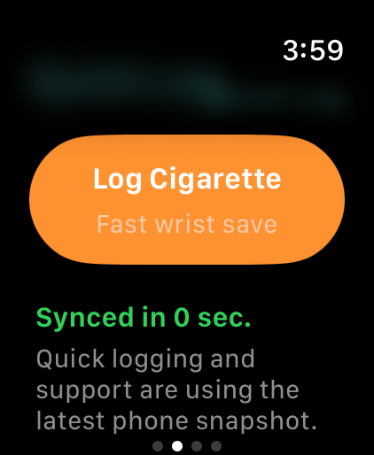
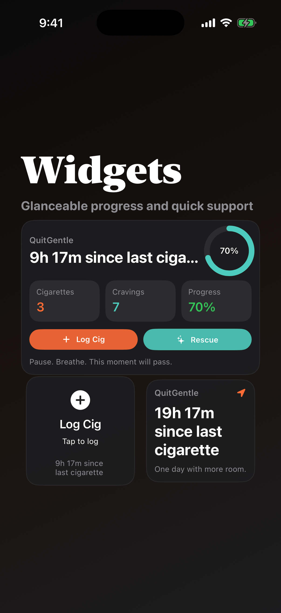
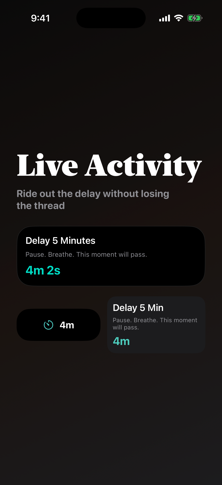

Put a little room between urge and action.
Start with minutes, not perfection.
Fast logs. Quiet rescue tools. Patterns you can actually use.
QuitGentle helps you log cigarettes and cravings honestly, get through the loud minute before you smoke, and come back later to understand what keeps showing up.


Open this. Take the next 60 seconds back.
When the craving spikes, you do not need a lecture. You need the next 60 seconds to be easier.
Start with minutes, not perfection.
Quiet pacing for the loud part.
Step away from the trigger.
Small action. Less friction.
A slip is data, not a verdict.
Logging should be fast enough to use on a coffee break, in the car, outside work, or at night when everything feels louder than usual.
QuitGentle keeps the interaction simple: what happened, when it happened, what helped, and enough room to reset without pretending the day was perfect.
Capture the cigarette before the story gets rewritten.
Keep the craving visible even when you do not smoke.
Add just enough context for later.
Your history stays yours to manage.
QuitGentle helps you notice when and where cravings happen without calling it failure. Coffee. The car. Work breaks. Evening stress. Familiar places. The repeat moments start to make sense.


The full QuitGentle experience starts on iPhone, then stays close through iPad, Apple Watch, widgets, and Live Activity.



Log, rescue, review progress, manage settings, and control your data.
Quick logging and support actions when your phone is not easiest.
See focused context without opening the app every time.
Keep the delay session visible while the craving moves through.
Use the roomier screen when you want history and hotspots to breathe.
No shame spiral. No account wall. No fake wellness lecture. QuitGentle keeps sensitive choices optional and plain.
The core tracker works without sign-up.
Notifications, location, Health, and Motion & Fitness are user choices.
Export, import, delete, and reset tools are available in the app.
Use local-first tracking by default, then sync only if you choose it.
Apple Health heart-rate context is opt-in and read-only.
QuitGentle does not diagnose, treat, prescribe, use CareKit, or replace medical support.
You just need a little more room before the next cigarette. Log honestly, survive the craving, notice the pattern, and keep going.
QuitGentle is supportive self-management software. It is not clinical care, diagnosis, treatment, emergency support, and not a replacement for professional medical advice.